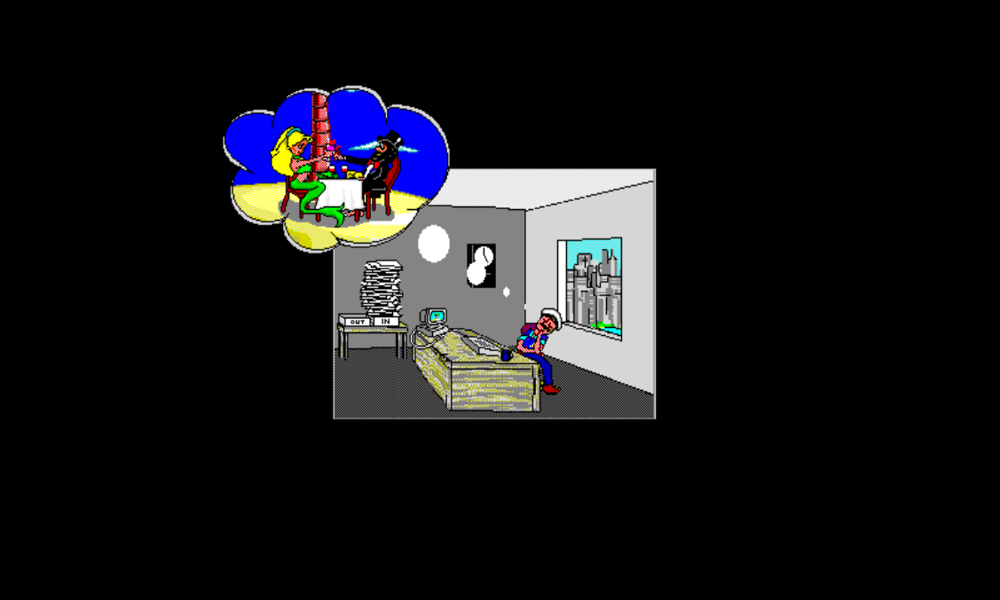
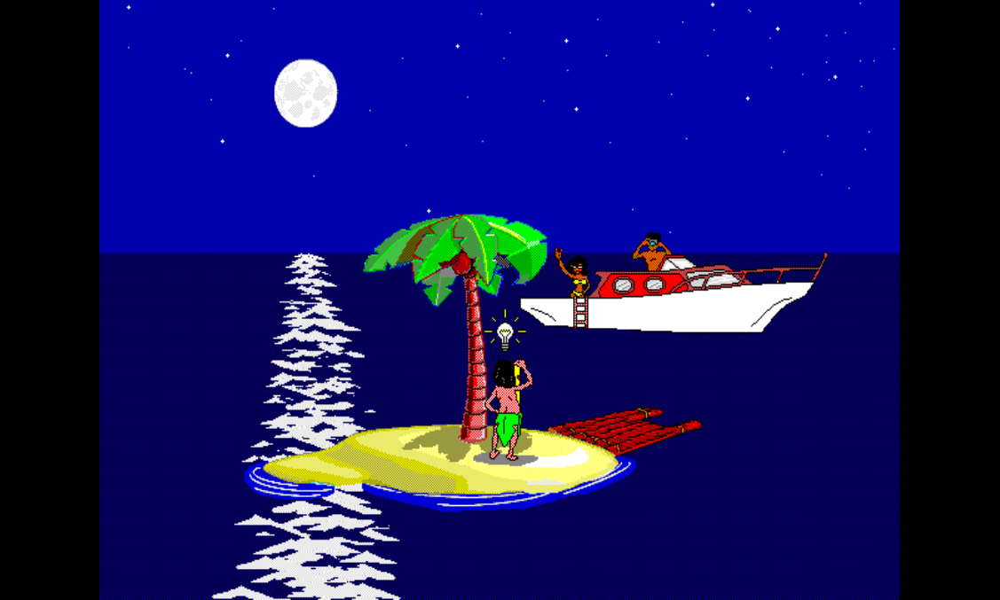
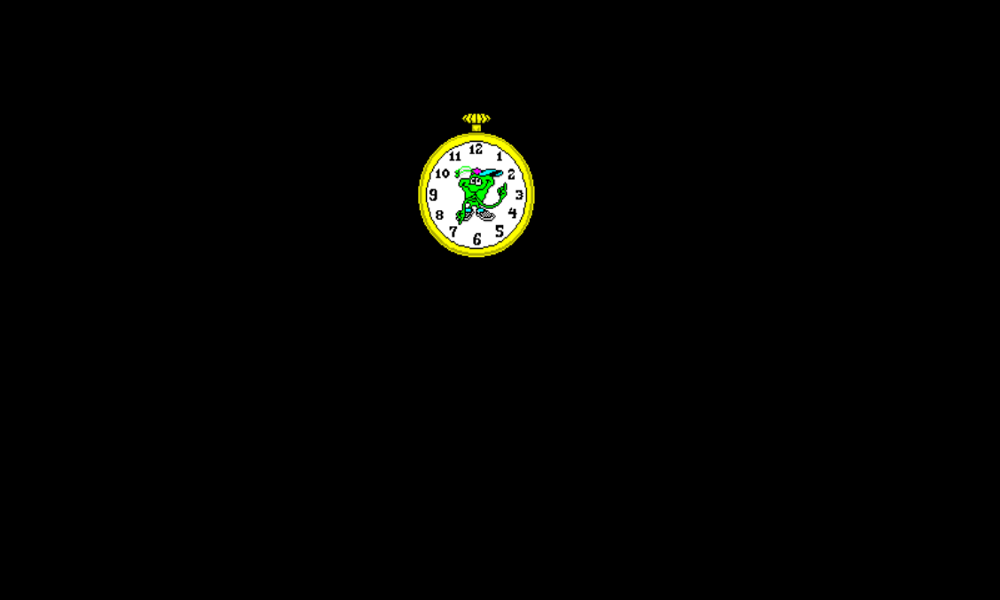
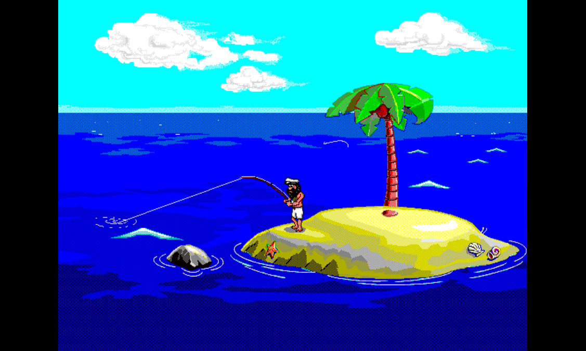

A fan port · v0.8.16
Johnny Castaway PS1
A ground-up PlayStation 1 port of Sierra's Johnny Castaway — one scene at a time.




What this is
Sierra’s Johnny Castaway (1992) is a screensaver about a man stranded on a tiny island. It runs in tiny vignettes — a fishing line, a passing ship, a holiday decoration — quietly, all day.
This is a port of those vignettes to the original Sony PlayStation, running on real hardware or on DuckStation. It is a fan project: the character belongs to the original creator, and the site’s chrome and its legal page reflect that.
All 63 of 63
routed scenes the original game had are validated under the
FISHING 1 bar
— pixel-perfect visuals plus synced SFX, signed off by human
review across every applicable variant. Current mainline work is
bugfixing, performance, and feature polish; the
v0.8.1 line
keeps long randomized runs stable, the v0.8.0 performance
baseline
promoted the headless optimization methodology, the
v0.8.2 + v0.8.3 follow-ons closed the VISITOR3 and WALKSTUF1
outliers, v0.8.4 walked all 63 packs on hardware to ship custom
chapter-select thumbnails plus a scene-page reconciliation against the
on-PS1 packs, v0.8.5 promotes the full 126-row timing-bearing
matrix, v0.8.6 lands the WALKSTUF1 / VISITOR3 setup-segment
compaction follow-through, v0.8.7 hardens deterministic
scene booting plus Scene Explorer preview loading, v0.8.8 promotes VISITOR5 high into green, v0.8.9 promotes VISITOR5 low plus the first W1-low in-place payload lane, v0.8.10 carries that no-shift WALKSTUF1 low baseline through frame 76 with active payload 879801 -> 801103, v0.8.11 restores lazy stream allocation after the release-merge heap pin briefly broke W1-low clean-rect allocation, and v0.8.12 extends the W1-low no-shift lane through frames 77 and 130 with active payload 879801 -> 799694 — the public battle card now averages
99.8% target speed
across the timing-bearing rows (public-capped; the
optimization-side raw signed average is past target). The two
ledgers live separately: the
scene ledger tracks visual
signoff and the
performance battle card tracks
headless DuckStation timing for every scene/tide variant.
How it works (the short version)
A host build of the original engine plays each scene under capture mode and dumps FG2 packs — small binary files that record every visible draw, every sound trigger, every frame timing. The PS1 build loads those packs from the disc and replays them against its own background, wave animation, holiday overlay, captions, and SPU audio.
The PS1 never interprets Sierra’s bytecode at runtime. That’s the whole trick. A 1992 screensaver fits onto a CD-ROM and inside 2 MB of RAM because all of the smart work is done on a desktop and pre-baked.
The full deep-dive — pack format, hardware gotchas, the SPI pad-poll fix that cost two days, the dirty-rect bookkeeping that wiped framebuffers on resume — lives at /about/method/.
Where to start
-
Help guide
Controls, menu screenshots, and the scripted-input test path that proves the menu still works headlessly.
-
Just play it
Latest
.bin+.cue, DuckStation quickstart, controller map. Five minutes. -
FAQ
Author-written answers to the recurring questions: what this is, why PS1, is this legal, can I sponsor or donate, do I need Sierra files, does it run at native rate, where do I file bugs.
-
How the port works
The hybrid pipeline, the pack format, hardware constraints, and the things that broke on the way.
-
Live scene ledger
All 63 scenes with visual-signoff status, per-scene case studies, and a family jump nav. The visual bar.
-
Headless-perf battle card
The other bar: 126 scene/tide variants timed against target frame budget. Sortable headers, color-coded Target Speed (≥99% green, ≥95% yellow, ≥90% orange, <90% red). Currently averaging 99.8% target speed.
-
The full story
Five chapters: 1992 Sierra, the prior reverse-engineering ports, the false starts, and the hybrid pivot.
-
Magazine-length Lab
Seventeen feature essays: the per-scene hero rollout retrospective, post-validation perf retrospectives, the soak loop and the v0.8.1 freeze, the chapter-select grind, the 63-scene grind, regression-as-lifestyle, the pixel-perfect pivot, the two-day SPI bug, the site as a small program, voice + hallucination engineering, the LLM pass, the build farm, the dunking bird, why this is the fifth port, holiday codegen, and what fan-porting in public looks like.
-
Curious hacker path
For readers who want to learn C, port Johnny to another target, or understand the debugging loops that unlocked the PS1 build.
-
Unedited devlog
The dated worklogs that drove each phase. Verbatim, no hindsight, dead ends preserved.
-
Reference docs
Twenty reference manuals: build, captions, holidays, pause menu, freeplay, story-loop walks, regtest, scripted input, performance, hardware, devices, audio, infrastructure, file formats, AI sub-agents, vision-classifier, the SDL2 → PSn00bSDK API mapping, dev workflow, feeds & well-known endpoints, and a glossary.
-
Source library
Every Markdown file outside the site wrapped into a public shelf page, from current manuals to old research fossils.
-
Resource catalog
Bitmap, ADS, TTM, sound, sprite-bank, and foreground-pack inventory with direct source links.
-
The dev environment, photographed
One screenshot, six windows: the Dunking Bird auto-poker, the fresh editor, two LLM sub-agents (Claude + Codex), DuckStation running the latest build, and bottom-monitor telemetry — KDE Plasma on KDE Neon.
What’s faithful, what’s added
Faithful to 1992. Every scene the original game has, in original order, with the same variants the original randomized between. The art is unchanged. The 4 original holiday decorations (Christmas, New Year, Halloween, St. Patrick’s Day) keep their original sprites.
Added on top. Story-loop walking between scenes — Johnny no longer teleports; he walks the original Sierra route table from one scene’s end to the next scene’s start, with palm-tree occlusion and ocean animation preserved across the walk. Freeplay/debug mode, where Johnny can be walked directly with the controller and debug-selected gags, visitors, sound effects, holidays, tide, raft, and day/night state. Closed captions for every scene (off by default, in a fresh-authored corpus from scene content — not lifted from any prior project). A holiday calendar expanded from 4 to 36 holidays with movable feasts computed by pure algorithm — Meeus for Easter, Nth-weekday-of-month for the rest, no expiring date tables. A pause menu reachable with Start (the original had none), with sub-screens for Scene Set, Scene Explorer (the chapter-select grid with on-PS1-captured thumbnails for every scene), Freeplay Options, Controls, World Options, Holidays, Set Island Position, Accessibility, Sound Test, System, Set Time/Date, and Set RNG Seed. An optional ocean-ambience loop on a dedicated SPU voice. Frog-clock loading transitions between scene swaps. The website credits and legal pages name exactly what’s owed to whom.
The full menu of what’s added vs preserved lives at /about/. The implementations live at /docs/, the complete documentation shelf is /source/, and the runtime assets are indexed at /resources/.
The shortest possible welcome
The project’s credits text reads, verbatim:
A labor of love by Hunter Davis.
Hunter does not own or have a license to the Johnny Castaway character. The original creator generously allows fan ports.
If you paid for this, you were cheated. Open source and free. github.com/huntergdavis/johnny-castaway-ps1
That text is the voice of the project credits. It is also the voice of this whole site. There’s no marketing copy, no “experience the magic,” no Patreon banner above the fold. It’s a small project about a small man on a small island. The disc plays. That’s what mattered.
Latest from the lab
The Lab is the magazine — feature-length retrospectives on the methodology, the war stories, and the choices that defined the work. Five most recent, newest first:
-
63 heroes How every per-scene page on the site got its own captured-on-PS1 hero image — and the cross-link clusters that emerged from writing one figcaption at a time. ~6 min read · 1599 words
-
The chapter-select grind Walking all 63 packs on hardware again to fix the thumbnails — and the surprising number of caption-mismaps it caught. ~4 min read · 1195 words
-
v0.8.1 — what the soak found that the matrix didn't A randomized DuckStation soak found a scene-load freeze the per-commit perf matrix never reached. The fix is small. The discipline is the lesson. ~2 min read · 681 words
-
From 87 to 99.7: the post-validation performance loop How the project closed roughly 12 percentage points of target-speed gap after every scene was already signed off — by treating performance as a separate ledger, not a refactor. ~10 min read · 2638 words
-
The site itself, as a small program A handful of decisions that keep this Jekyll deployment portable, low-noise, and free of plugins it doesn't need. ~15 min read · 3869 words
Latest from the devlog
The devlog is the verbatim worklog — what was in the author’s head on a particular day, with the dead ends preserved. Five most recent posts, newest first:
-
Scene Set lineup expands to seven categories — May 3, 2026 Scene Set ships with the full categorical lineup: Johnny Stories, Mary Visits, Visitors, Activities, and Misc & Suzy on top of the existing All Scenes and Fishing Only. Pools point at real scenes whose FG2 packs are already on disc, so they play immediately and look better in place as visual signoff lands. ~1 min read · 483 words
-
Scene Set framework and an animated frog clock — May 3, 2026 Pause menu gains a Scene Set row that constrains the screensaver pool by category (All Scenes / Fishing Only / …); Left/Right preview, Cross or Start commits. The frog-clock loading frame goes from a static image to a 36-vblank animation with hour and minute hands placed from the original MEANWHIL.TTM script. ~3 min read · 971 words
-
Ocean Ambience — v0.6.0-ps1 — May 1, 2026 A CC0-sourced 20-second ocean loop on a dedicated SPU voice. Pause-menu toggle, memcard-persisted, zero CPU cost in steady state. The screensaver's per-VBlank budget is unchanged; the SPU plays + auto-loops in hardware while the screensaver loop runs as before. ~4 min read · 1175 words
-
Scripted pad input, menu screenshots, and testing the UI like a player The next test harness teaches the PS1 build to press its own controller buttons, capture every major pause-menu screen, and publish the result as player help. ~1 min read · 369 words
-
Freeplay debug mode — May 1, 2026 Direct-control Johnny moved from design sketch to a playtestable PS1 mode: analog walking, fishing, menu-driven gag/visitor catalogs, immediate world toggles, frog loading transitions, and a stricter no-per-frame-allocation rule. ~3 min read · 797 words
The disclaimer, plainly
Johnny Castaway, the character, the screensaver, and the original
Sierra art and audio are © Sierra On-Line and not licensed under GPL.
This project ships only the code that drives the port. The released
.bin / .cue contains pre-baked playback packs — derived data, no
Sierra source files. The host build, used in development, requires
the original Sierra data files (RESOURCE.MAP, RESOURCE.001) which
the user supplies themselves.
Full text at /legal/.